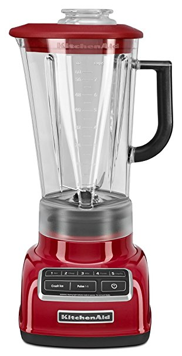

Блендер BORK B800 VS KitchenAid 5KSB1585
Современная техника отличается от ретро тем, что экономит самое ценное на сегодняшний день – время. Ретро дизайн - это на любителя, а вот ретро технологии это вчерашний, а быть может и позавчерашний день.
KitchenAid 5KSB1585
Преимущества KitchenAid, которые пытаются продать:
- Дизайн и выбор цветов
- Страна производства США
- Срок гарантии 2 года
- Международная компания существует с 1919 года
- KitchenAid переводится как кухонный помощник
Характеристики KitchenAid:
- Потребляемая мощность: 615 Вт
- Объём чаши: 1,75 л
- Вес: 4,5 кг
- 5 скоростей + режим Pulse
- Режим для измельчения горячих продуктов
- Ножи несъёмные, количество лезвий: 4 шт
- Скорость вращения насадки: 2000 – 11500 об/мин
- Тип управления псевдосенсор
- Материал чаши пластик не содержит BPA
Преимущества BORK B800:
- Максимально простой в использовании и самостоятельный блендер. Нет необходимости выбирать скорость и время обработки продукта. Положите продукт в чашу, нажмите кнопку, блендер сам прекратит работу, когда результат будет идеальным
- 3 автоматических программы со специально разработанными алгоритмами позволяют максимально удобно достичь превосходного результата
- Система измельчения Kinetix это совокупность формы чаши и шести ножей специальной геометрии, обеспечивающая быстрое равномерное измельчение продуктов и исключающая появление мёртвых зон
- За счёт высокой мощности 2000 Вт, блендер BORK идеально справляется с плотными и вязкими текстурами
- Вместительная чаша объёмом 2 литра выполнена из поликарбоната, устойчива к появлению царапин и не мутнеет
- Реальная цена отличного продукта
Покупая KitchenAid, вы покупаете не только ретро дизайн, но и ретро технологии.